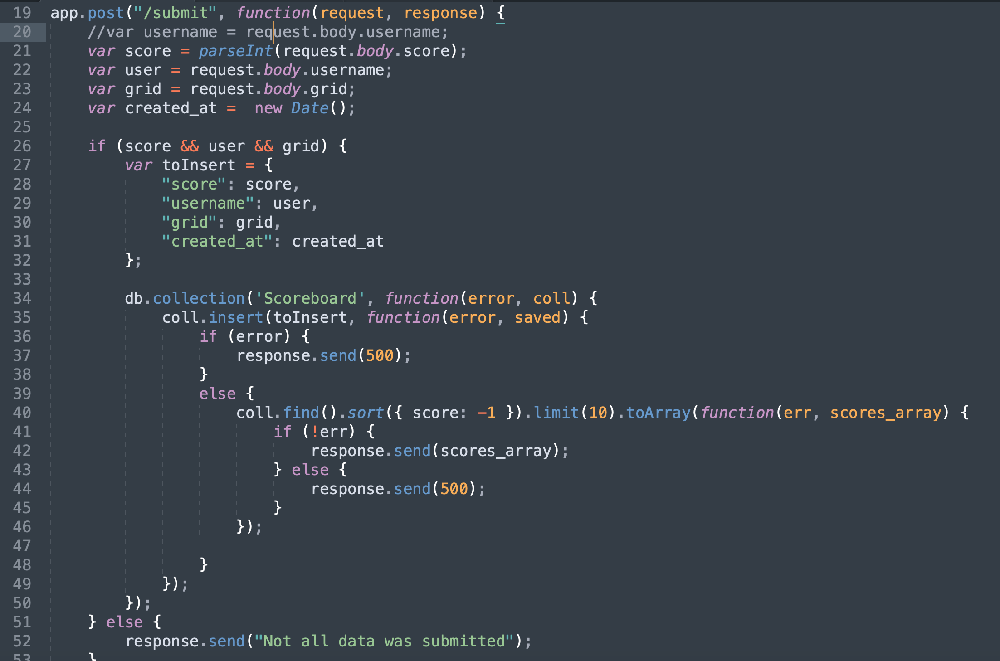
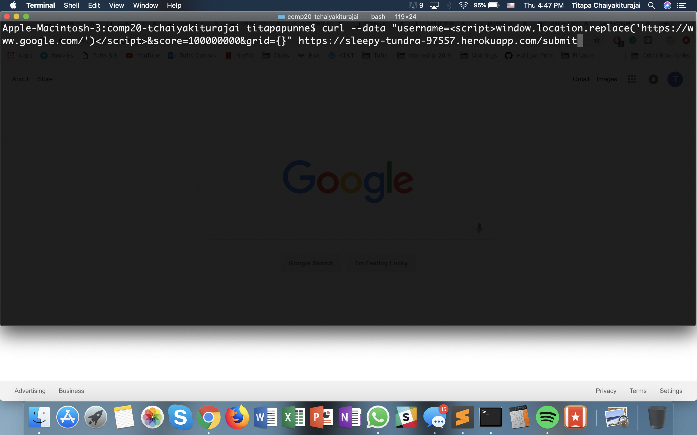
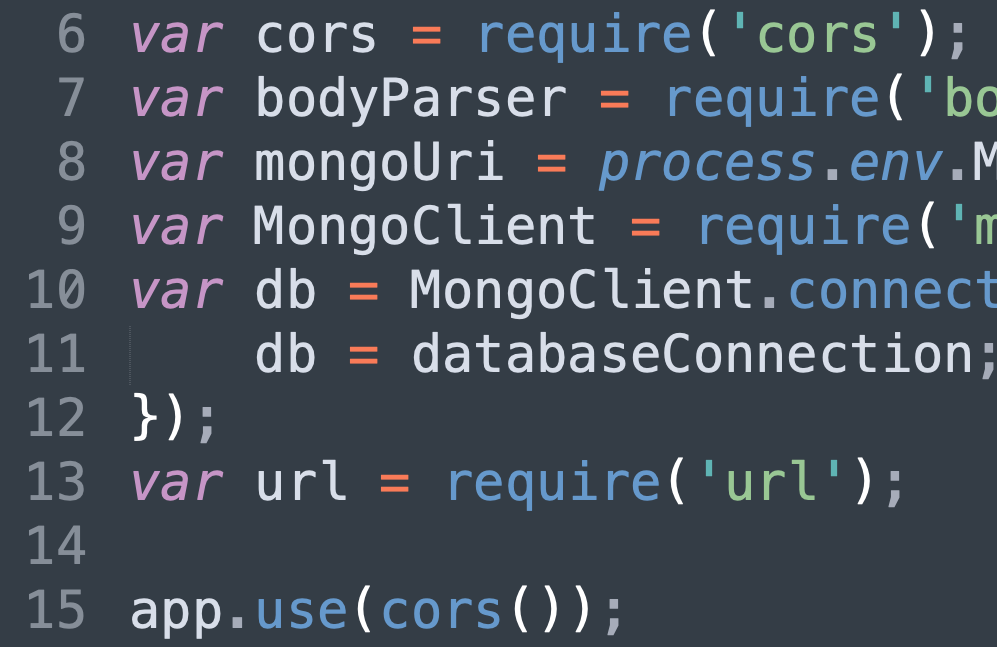
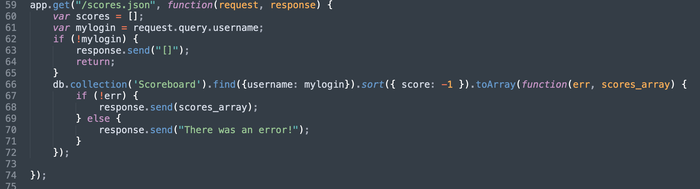

For this assignment, I have been given the client-side and server-side of the 2048 game modified by my partner, Ethan Chen. Unfortunately, the code has security and privacy vulnerabilities, and I have been hired as a security consultant to document and resolve the security and privacy issues in the applications.
I mainly used curl on terminal to crack my partner's code. I also used a variety of user input through the game and the query string to try to insert unwanted information and mess with my partner's code.
Overall, the security and privacy issues I've identified involves not validating user input and not validating user's request for information. Authorization is necessary for privacy issues because we don't want private information in the wrong hands. Not authenticating or validating user input could result in harmful information ouput to the user or inserted into the database.
Really bad programming practice.
gamemanager.js: line 92
Medium Severity. Although this is technically not exactly a vulnerability, it is really bad programming practice because hard-coding username is extremely rigid and constrained.
Hard-coding username (or hard-coding anything) is bad programming practice. With this hard-code, Ethan is giving away is credential to users. We never want to give any any credentials to users without validating them.
To resolve this very bad programming practice, my partner could prompt the user to enter their username. This will allow each user to have his/her own unique username instead of always being "Ethan." Sample code: var username = prompt("Enter usename: "); He should also delete the "Ethan" part from "username=Ethan&".
XSS
the ./submit part

High severity. There is no access prevention. I was able to redirect my partner's heroku to another site (google in this case), which is a huge issue because it means the hacker would be able to redirect users to any malicious website.
The issue with this is that the logic of /submit route is not preventing XSS at all. It takes data from users without first properly validating the data. Not checking user's input before saving it is a big problem because you NEVER TRUST USER INPUT. Because my partner's code trusts user input, the hacker could input anything, including harmful links like how I was able to redirect it to google.com.

When I run my partner's heroku with the /submit route, it redirects me to www.google.com. The screenshot of this is not included because the redirecting happens very fast.
To resolve this XSS issue, my partner could do several things: limit amount of characters, check for input before taking it in, check for special characters in input and clean away those special characters before inserting them into the database.
CORS
index.js: line 6
index.js: line 15
High severity. The requested resource allows sharing with every origin.
Because CORS is enabled for any domain, it gives anyone ability to access the database and submit information into the database. Any site can send an XHR request to this site and access the server’s response.

Don't implement this CORS response. Or, my partner could check for authentication before allowing any site or anyone to access the database.
Database Injection
The /scores.json route

High severity. This allows hackers to trick the server into giving them information they shouldn't be able to access without authorization.
This issue here is that the database is like a naive child who trusts anyone who wants to access it. I was able to use "mongo language" to trick the database into giving me all the scores stored from all the users by telling "any username that is not dog." This was done by putting logic into the database using "mongo language". This is shown in the picture below, as the query string added to the URL is "?username[$ne]=dog".
A way to resolve this issue is to ask for authorization or authentication before giving out any information stored in the database. My partner could also verify that the query string is not meant to trick the database by thoroughly checking over the query string, which is the user input. Again, NEVER TRUST USER INPUT.
Web security is extremely important in any web application implementation. I recommend my partner to ask for authentication and also check every single thing the user inputs before storing it into the database. My partner should protect his front end from intaking false input, and should protect the database from receiving any unwanted injections. To me, the most important thing is to VALIDATE USER INPUT.
https://www.owasp.org/index.php/SQL_Injection_Prevention_Cheat_Sheet
https://stackoverflow.com/questions/503093/how-do-i-redirect-to-another-webpage
https://stackoverflow.com/questions/12001269/what-are-the-security-risks-of-setting-access-control-allow-origin
https://www.owasp.org/index.php/Top_10_2013-Top_10